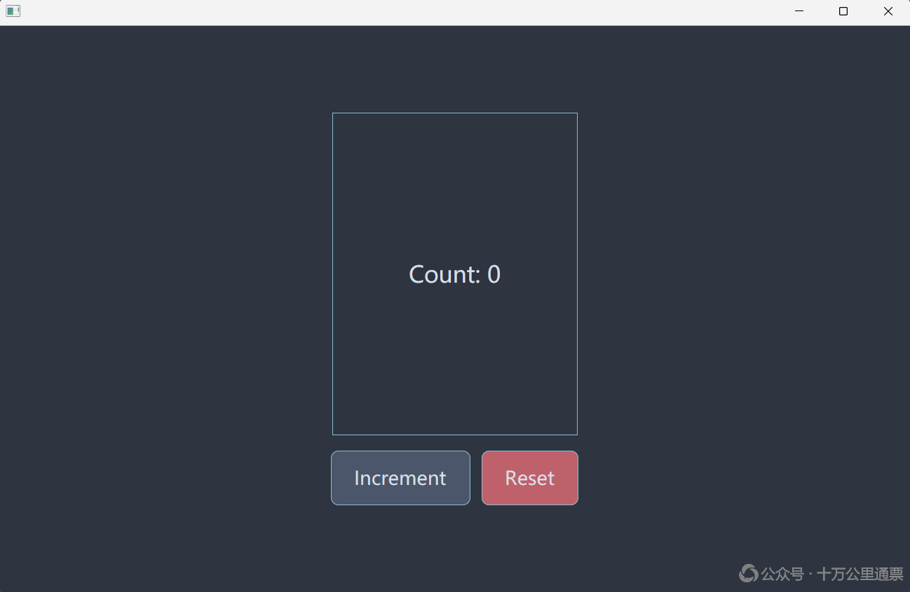
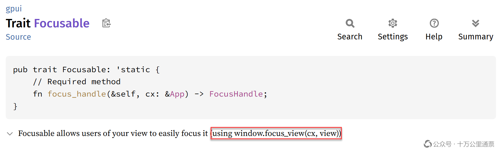

Rust GPUI 桌面应用开发入门：界面交互和事件响应

继 《Rust GPUI 桌面应用开发入门：创建项目和概念讲解》 之后，我们继续学习 GPUI，本文重点关注 GPUI 的事件响应机制。好的讲解需要好的示例。这次，我们就不发明新轮子了，借用 《GPUI Interactivity - Building a Counter App》 一文的示例进行介绍，同时给出更加细致和深入的解说，帮助大家透彻理解 GPUI 的事件响应机制。特别声明：本博客长期遭受 51CTO 官方系统性盗文剽窃，再次控诉其可耻行为，详情参见 《51CTO，一个抄袭剽窃的流氓网站！》 ：https://laurence.enlightgram.com/others/51cto-plagiarism/
1. 创建示例项目
老样子，还是先把项目建好。有了 《Rust GPUI 桌面应用开发入门：创建项目和概念讲解》 一文的介绍，创建项目可谓是驾轻就熟了，以下是全部操作：
1 | create-gpui-app --name my-counter |
创建完成后，将 src/main.rs 文件更改为如下内容：
1 | use gpui::{ |
然后运行程序，程序界面如下：

2. 响应键盘事件
2.1 定义 Action：关联键盘事件和响应方法
在 GPUI 中，Action 是对用户操作意图的一种抽象，比如：当我们在一个应用中按下 Ctrl + O 快捷键时，就会触发一个叫 OpenFile 的 Action，因为 Ctrl + O 这个组合键绑定给了一个叫 OpenFile 的 Action，但 Action 并不负责处理具体事务，系统会把用户请求委派给与 Action 关联的一个业务方法去处理，在整个过程中，Action 不需要携带任何信息，也不会调用它的任何方法，只需要它“出现”在那里，作为一种“动作标识”即可（ 类 似于一种枚举）。我们先看一下与 Action 相关的代码，然后再继续讨论 Action 的功能和作用。首先是第 8 行的 Action 声明：
1 | // 定义 Actions |
actions! 是一个宏（文档： https://docs.rs/gpui/latest/gpui/macro.actions.html ），它能定义并注册一组结构体作为 Action 使用。它的第一个参数（本例中的 counter ）定义了一个命名空间，它所定义出的 Action 都将属于这个命名空间。引入命名空间的作用是防止多个同名的 Action 相互冲突，将关系紧密的 Action 组织在一起，并用命名空间加以冠名是一种很必要的组织方式；它的第二个参数（本例中的 [Increment, Reset] ）定义的是一组具体的 Action，这些 Action 都是实现了 Action trait（文档： https://docs.rs/gpui/latest/gpui/trait.Action.html ）的结构体，本例中 actions! 宏执行后相当于创建了： counter::Increment 和 counter::Reset 两个结构体。定义好 Action 后，就是要将其与特定的按键绑定起来，这样用户在界面上按下对应的键时，绑定的 Action 就会触发（第 126 - 130 行）：
1 | // 将按键与 Action 进行绑定 |
但是，Action 本身并不直接处理用户请求，GPUI 会把请求委派给一个注册过的业务方法去处理。这个“注册”环节，或者说将 Action 与业务方法进行“关联”的动作在哪里呢？答案是在页面元素的配置中（第 74 - 76 行）：
1 | div() |
这里涉及 Rust 函数项和 Fn trait 的一些高级语法，我们后面还会继续解释，此处先不展开。抛开语法不谈，这两个方法的“意图”是非常清晰的：它们将 increment() 和 reset() 两个方法关联（或者说注册）到了 Action 上，对，准确的说是 Action 不是 UI 组件。这里有一个隐藏的细节，就是： on_action() 方法中并未出现 Action 的身影，那 GPUI 是怎么知道 increment() 和 reset() 应该关联到什么 Action 上呢？答案是：GPUI 是从 increment() 和 reset() 两个方法的参数 _: &Increment 和 _: &Reset 的类型 Increment 和 Reset 自动推断 出： increment() 方法应该处理 Increment 这个 Action， reset() 应该处理 Reset 这个 Action。
以 Action 的定位来说，它本应该类似于 Qt 中的 QAction，但实际上不是，它的角色和 QAction 在 QMenu 或 QToolBar 中扮演的角色不太一样。就我当前的认知来说，我不能完全理解 Action 在 GPUI 中的定位和合理性，为什么这样说呢？我们先抛开 GPUI，单纯以 Action “应该有”的定位来谈（如果你熟悉，可以用 Qt 中的 QAction 作为一个参照，但不应刻意比较）：引入 Action 的核心目的应该是：把「用户按了什么键/点击了什么按钮」和「要执行什么命令」解耦，三者之间理想的关系应该是这样的：
键盘/鼠标事件 🠚 Action 🠚 事件响应函数（业务方法）
这种处理方式有很多好处，一是在 UI 上可能有多种不同的组件（如菜单项、工具栏按钮、快捷键等）对应同一个业务处理方法，将它们先关联到一个 Action 上，然后在通过 Action 关联业务方法，确实能增加一定的灵活性，消减 UI 界面和后台业务方法之间耦合度，这可以体现在很多方面，比如：用户需要更改快捷键设置，如果快捷键直接和业务方法名绑定，这就很难实现。总之：Action 作为一种用户“操作意图”的抽象是一种合理且稳定的“中间层”，可以在原生 UI 事件和业务方法之间扮演 mediator 角色。但是，GPUI 对 Action 的应用仅限于键盘事件，对于鼠标事件，GPUI 的处理方法又“退化”成了不经 Action 而直接响应的模式，也就是说，在 GPUI 中，实际的情形是：
键盘事件 🠚 Action 🠚 事件响应函数
鼠标事件 🠚 事件响应函数
这是我目前不太能理解的地方，这给人的感觉是很“割裂”的，仿佛前面谈论的 Action 的那些“好”白说了，尤其是在面对“大量 UI 操作都是由鼠标发起”这一现实时，更让人不能理解为什么 GPUI 不统一键盘和鼠标的事件响应机制。而在 Qt 中就没有这个问题，QAction 可以统一应对键盘和鼠标操作，在架构设计上给人的感觉是：统一的、协调的。关于这个问题，我也询问了一下 AI，大多数的论点都经不住推敲，只有下面这一条还算有些道理：
键盘快捷键天然适合映射到命令，因此经常通过 Action 处理；而许多鼠标事件（移动、拖拽、滚轮等）是连续交互过程，无法抽象成稳定的命令，因此通常直接作为 Event 处理。
但那些在菜单项、工具栏按钮上的“鼠标点击事件”还是天然适合映射成 Action 的，但 GPUI 没这么处理，而 Qt 去可以这么处理，这就是我目前对 GPUI Action 定位的一点“困惑”和“意难平”。可能过段时间会有新的认识和结论，到时候再更新。
2.2. 启用焦点系统
上一节我们是围绕 Action 讲解的，定义 Action 的最终目的还是用来响应键盘事件的，所以，这一节我们继续沿着“响应键盘事件”的主线继续往下讲。在其他 GUI 框架里，响应键盘事件就直接按规定的响应机制去实现，并没有其他多余的前置动作，但是 GPUI 很不一样，如果想让一个 GPUI 组件能响应键盘事件，这个组件必须要有“获得焦点的资格”，这是需要提前设置的，然后在运行时，也必须是在已经获得焦点的前提下才会触发相应的键盘事件。
其实，在其他 GUI 框架里也有焦点机制，但很少会像 GPUI 这样要求用户显式地编写与启用和获取焦点有关的代码，因为在那些 GUI 框架里采用的是一种自动化焦点策略，例如，当用户打开一个窗口时，界面会自动聚焦于某一个输入组件，这种自动化策略应用在普通的桌面应用上是没有问题的，所以，框架就自动处理了焦点。但是 GPUI 没有这样做，它要求：开发者必须先将组件设置为“可获取焦点”的（也就是植入 FocusHandle（焦点句柄）），然后在系统初始化时申请一个 FocusHandle 的实例传给组件（类似拿到了一个可捕获焦点的牌照），使其在运行时，通过 Tab 键或点击某处让焦点移动到这个组件上，只有在这种情况下，按下相应的快捷键，绑定在组件上的键盘事件才会触发。
GPUI 之所以选择这样处理，官方没有文档解释，但一种非常合理的推测是：GPUI 是为文本编辑器设计的，这类应用是“重键盘输入”的，在文本框中输入文字和按下某个快捷键执行操作是完全不同的指令，所以焦点系统对 GPUI（准确地说是 Zed 或文本编辑器）尤为重要，因此 GPUI 才把焦点的设置和处理提升到与事件响应一样的层级，并需要用户显式地编写代码去完成焦点的设置。下面我们就来详细介绍一下如何在 GPUI 中启用焦点系统，可以分成四个关键动作：
-
在组件中植入
FocusHandle -
让组件实现
Focusable -
在应用初始化时申请一个
FocusHandle实例并赋给组件 -
将组件的
FocusHandle和 UI 元素关联在一起
以下是针对每一个操作步骤的详细介绍。
2.2.1 在组件中植入 FocusHandle
在这个示例中， Counter 这个结构体是我们唯一的“ 数据模型 ”（第 10 - 13 行）：
1 | struct Counter { |
当它被 cx.new() 包裹和注册后，就得到了本例唯一的一个 Entity： Entity<Counter> 。而 Counter 同时又实现了 Render ，所以这个 Entity 也可以在 UI 上展示出来，因此它也成为了一个 View。这是对上一篇文章介绍的知识的“温习”。在本文中，我们看到了一些“新东西”，就是这个 focus_handle: FocusHandle ，它是 GPUI 焦点系统的“标识符”，那么它是做什么用的呢？
鉴于 Counter 拥有业务数据，同时又实现了 Render ，因此 Counter 成为了“响应用户 Action”的最合适载体。我们为其添加了相应的关联方法： increment() 和 reset() 。我们期望当用户分别按下“空格”和“R”键时，这两个方法能被触发。但这有一个前提：就是 Counter 这个 View 必须得先获得焦点，然后才有可能响应按键，而要能获得焦点，必须得先获得“能购获得焦点”的资格，这个“资格”就是它得持有一个 FocusHandle 的实例，也就是代码中的 focus_handle: FocusHandle ，它就是用来赋予 Counter 能获得焦点资格的。
2.2.2 让组件实现 Focusable
在组件中植入 FocusHandle 只完成了一半的工作，另一半的工作是： 要让外界知道组件有资格获取焦点，并且在需要时可以拿到它的 Focus Handle，这就是实现 Focusable 的目的和作用 （第 15 - 21 行）：
1 | impl Focusable for Counter { |
让一个组件实现 Focusable trait 很有传统 GUI 库的“味道”，是一种典型的 OO 风格。我们在“第 4 步：将 UI 元素和 FocusHandle 关联在一起”时，调用了由 Focusable 规定的 focus_handle() 方法，获得了 Counter 内部持有的 Focus Handle（第 73 行）：
1 | div() |
但这个示例并不能有力地解释：一个组件为什么要实现 Focusable ，因为 Counter 完全可以提供一个简单的 getter 而不去实现 Focusable ，一样可以配合 track_focus() 完成工作。关于让组件实现 Focusable 的必要性，在 GPUI 的官方文档（ 0.2.2 版本）： https://docs.rs/gpui/latest/gpui/trait.Focusable.html 中做过解释，并且还提供了一个例证（不过，文档中给出的那个 window.focus_view(cx, view) API 已经不存在了）：

简单地说，框架的某些部分一定是基于 Focusable 这个 trait 编写的，如果一个组件没有实现 Focusable 则在获取焦点时可能遇到麻烦。最后，梳理一下 Focusable 这个特质关键点：
如果一个组件打算要获得焦点就必须得实现
Focusable，一方面在需要提供 Focus Handle 的时候，可以直接调用由它规定实现的focus_handle()方法，另一方面，在系统的别处，与焦点相关的处理逻辑可能会基于Focusable这个 trait 编写的，不实现它会有潜在的问题。
2.2.3 应用初始化时申请一个 FocusHandle 实例并赋给组件
在结构上， Counter 组件获得焦点的准备工作已经就绪：一是植入了 Focus Handle；二是实现了 Focusable 接口。现在只剩下在启动时从系统（ cx ，即应用程序上下文）申请一个 Focus Handle 并赋值给它，为此， Counter 提供了一个 new() 方法来实例化自己（第 15 - 21 行）：
1 | fn new(cx: &mut Context<Self>) -> Self { |
在应用初始化时，会给它传入 cx 让它完成创建（第 137 行）：
1 | |_, cx| cx.new(|cx| Counter::new(cx)) |
2.2.4 将组件的 FocusHandle 和 UI 元素关联在一起
前面三项工作都是围绕组件自身所做的准备。最后，我们需要将组件与 UI 元素关联起来，彻底打通“获取焦点”的功能链路。这最后一步很简单，代码如下（第 73 行）：
1 | div() |
完成这一步后， Counter 就正式成为一个可以获得焦点的组件。当我们在应用窗口中按下 Tab 键或点击该组件时，系统焦点便能移动到它上面，这也为它后续响应键盘事件铺平了道路。
2.3 响应键盘事件
组件具备了获得焦点的能力后，响应键盘事件就很简单了，基本上可以分为三个关键动作：
-
在组件中定义事件响应函数；
-
在 UI 元素上注册 Action （关联键盘事件）；
-
将按键与 Action 进行绑定。
上述三个动作的逻辑是很清晰的，也能很好地体现出我们在第 2.1 节介绍 Action 时所阐述的 Action 的作用：它是衔接 UI 事件和响应方法的“桥梁”。下面我们详细梳理一下个个关键动作。
2.3.1 在组件中定义事件响应函数
在 GPUI 中，没有设计专门的 trait 对事件响应函数的签名进行约束，但其参数列表是受严格类型检查的，后面会介绍。我们来看一下 Counter 中两个面向 Action 的响应函数，也就是响应键盘事件的两个函数（第 23 - 35 行）：
1 | impl Counter { |
这两个方法的实现非常简单，真正需要关注的是函数的参数列表。三个参数提供了函数在处理事件时所需的全部信息：
-
action: &Action：被触发的 Action 信息； -
window: &mut Window：当前窗口的引用，可用于操纵窗口； -
cx: &mut Context<Self>：应用上下文，可以从中获取更多信息（注意，这里提供的不是 App 对象，而是一个限定在当前 View（Entity<Counter>）范围内的上下文）。
2.3.2 在 UI 元素上注册 Action （关联键盘事件）
在 UI 元素上注册 Action 仅需一行代码，非常简单，具体到我们的示例是以下代码（第 74 - 76 行）：
1 | div() |
这里的 cx.listener() 方法是非常薄的一层封装，但它有一个重要的作用，就是对响应函数的参数列表进行约束和检查。这一点，我们在上一节没有解释，现在要好好地看一下这个问题了。回看 increment() 和 reset() 两个 Action 响应函数的参数列表，你可能会有一个疑问：为什么会是 action 、 window 、 cx 这三个参数呢？这些方法并非由某个 trait 定义，但参数个数和类型显然不是随意写的。那么，是谁规定了这些 Action 响应函数的形式呢？答案就是 cx.listener() ，如果我们把没有使用到的 _: &mut Window 参数移除，或者改为 _: & Window ，编译器都能立即检查出错误，这说明 GPUI 对这些方法的签名有严格的约束，这个约束正是来自于 cx.listener() 方法对其参数类型的声明：
1 | pub fn listener<E: ?Sized>( |
Action 响应函数会以函数项（Function Item）的形式，即： Self::increment 传给 cx.listener() 方法，而 cx.listener() 接受的参数类型是一个 Fn trait，也就是代码中的 f: impl Fn(&mut T, &E, &mut Window, &mut Context<T>) ，是它对传入的函数参数列表进行了严格的约束。
2.3.3 将按键与 Action 进行绑定
最后一步，我们需要让系统捕获到期望的按键，并将按键与 Action 绑定。至此，响应键盘事件的全部工作就完成了（第 126 - 130 行）：
1 | // 将按键与 Action 进行绑定 |
3. 响应鼠标事件
相比于键盘事件，响应鼠标事件要简洁得多，这主要体现在两个方面：
-
鼠标事件不需要通过 Action 进行衔接，可以直接关联到响应函数上
-
鼠标事件不需要“获取焦点”这一前置动作，可以直接响应
如此一来，响应鼠标事件只需两个步骤：
-
在组件中定义事件响应函数
-
在 UI 元素上注册事件响应函数
下面看一下具体的实现细节。
3.1 在组件中定义事件响应函数
与键盘事件响应函数一样，鼠标事件响应函数也没有 trait 对函数参数列表进行约束，而是依靠 cx.listener() 的参数类型检查。相关原理前面已经介绍过，这里不再赘述（第 37 - 49 行）：
1 | // 面向鼠标事件的响应函数 |
3.3 在 UI 元素上注册事件响应函数
注册鼠标事件响应函数与注册键盘事件响应函数类似，只是使用的注册方法名不同（第 103、116 行）：
1 | div() |
以及:
1 | div() |
与注册键盘事件不同的是：鼠标事件并不与 Action 绑定，也不存在基于事件响应函数的参数类型推断响应哪个 Action 的问题，算是较为传统的事件绑定风格。
4. 警惕“坏味道”
如果你足够敏锐，在看到文本示例代码时就该意识到一个问题：这个 Counter 的设计有“Bad Smell”，它的 count 和 focus_handle 完全不是同一个层面东西，前者是业务字段，后者是纯粹的 UI 设施，它的四个事件响应方法也不适合作为业务方法，因为方法签名已经被 UI 层的 API “污染”了。这些对于一个示例程序来说算不上问题，如果用这种方法在开发就显然不行了。对于大中型应用来，一定是会分层的，但这不是本文要讨论的话题，这里只是给大家提个醒。
参考资料
Rust GPUI 桌面应用开发入门：界面交互和事件响应
https://laurence.enlightgram.com/gpui/gpui-getting-started-2-events/